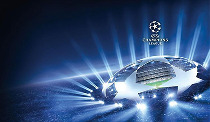
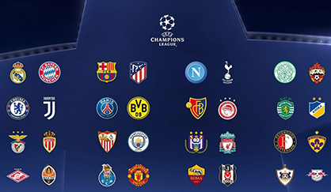

Trận Nhật Bản-Colombia: Bắt nạt được võ sĩ được hay không
Trận Nhật Bản-Colombia: Bắt nạt được võ sĩ được hay không
Kèo thơm ngon xin ăn mời bạn ăn nha

Tổng thống Volodymyr Zelensky ngày 27/2 khẳng định ông sẽ tận dụng mọi cơ hội để đảm bảo hòa bình cho Ukraine. Tuyên bố này được đưa ra trong bối cảnh phái đoàn Ukraine dự kiến sẽ gặp phái đoàn Nga để tiến hành hòa đàm. Cũng trong ngày 27/2, Văn phòng Tổng thống Ukraine đã xác nhận thông tin Kiev và Moskva sẽ tiến hành đàm phán “vô điều kiện” tại Belarus.